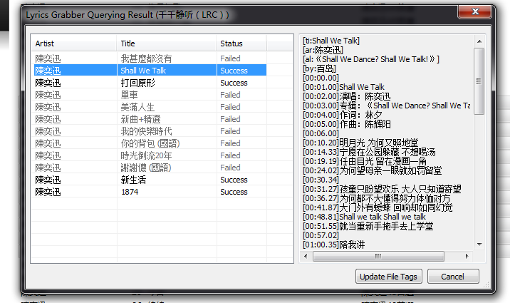
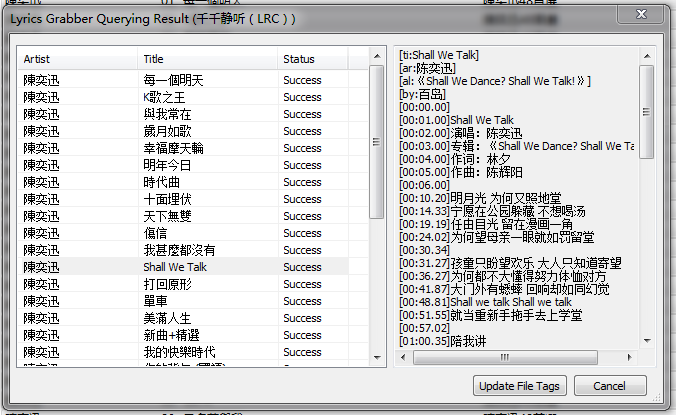
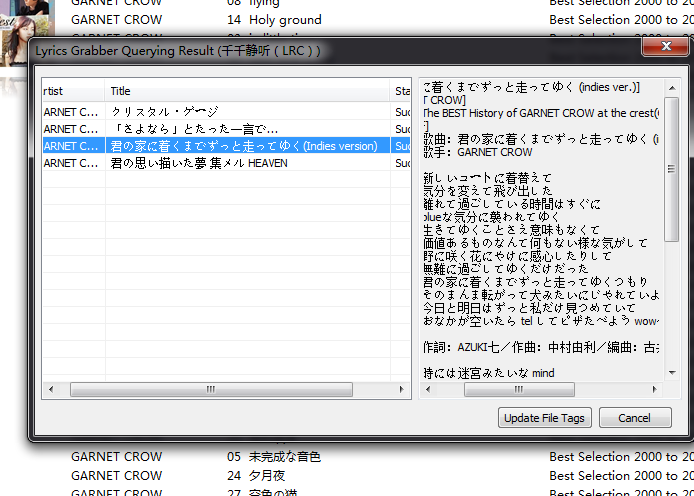
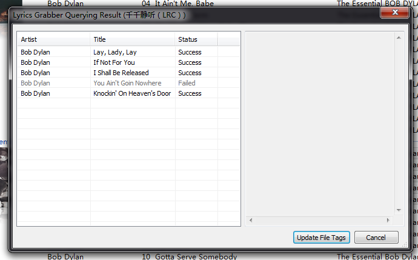

之前修改过现在查词失败的同学请点这里
Lyrics Grabber2 可以说我理想中的歌曲下载插件，主要是它可以批量抓取更新歌词，又可以自定义抓取脚本方便扩展(见此 HowToMakeProviderInPython)，实在强大。不过还是有一些不足，比如找到的歌词没有给出来源（Provider），歌词服务器（Provier）不能更改优先级，还有就是出现多个歌词的匹配问题，既有多个服务器的，也有一个服务器的多个歌词的，希望能增加人工选择的选项。不过 Lyrics Grabber2 刚好一年没更新了，再更新实在希望不大。
再者，现在Lyrics Grabber2 里面的千千静听歌词抓取脚本（TTPlayer(LRC).py）是用不了的。我了解一下，把 bug 总结如下：
- 36行，导致搜索失败的主要原因，现在千千静听搜索歌词的服务器变了
- 103行，另一个导致搜索失败的原因，用来生成 code 的字符串应该用 utf-8 编码，而用
minidom.parseString出来的字符串已经是 utf-16le 的了. - 114行，这一行应该是打错了. 条件应该是
c >= 0x80 - 42行，同样是编码问题，导致 Levenshtein 算法失效，因为比对的是两个不同编码的字符串。
修复完bug后，就可以成功查词了。但是结果并不理想。 
{kind=link}
由上图可以看出是，英文和简体没压力但繁（正）体中文就不行了。显然还需对 title 做些处理。通过对千千静听进行测试，发现千千静听对查询串的处理远不止 71、72、73 所在的那样。 大概做了下面这些过滤：
- 英文转小写
- 去括号，大中小还有全角的小括号
- 去除半角特殊符号，空格，逗号，etc。
- 去除全角特殊符号
- 繁（正）体转换为简体
繁（正）体转换为简体，找不到好的现成方案（针对 unicode 字符集 uft-8 编码的）。只能动用谷歌翻译的 API 了。没想到谷歌翻译倒工作的很好。不过毕竟是多一个网络请求，建议不需要的时候可以把它注释掉，以加快查询速度。其他过滤功能也可以根据情况去掉，已加强效率。FYI:脚本更改后立即生效，无须重启 foobar2000.
针对这些，增加了下面的新方法
def QianQianStringFilter(self,string):
s = string
# 英文转小写
s = s.lower()
# 去括号，大中小还有全角的小括号
s = re.sub('\(.*?\)|\[.*?]|{.*?}|（.*?）', '', s);
# 去除半角特殊符号，空格，逗号，etc。
s = re.sub('[ -/:-@[-`{-~]+', '', s);
# 繁（正）体转换为简体
s = translate(s,'zh-tw','zh-cn')
s = unicode(s, 'utf_8')
# 去除全角特殊符号
s = re.sub(u'[\u2014\u2018\u201c\u2026\u3001\u3002\u300a\u300b\u300e\u300f\u3010\u3011\u30fb\uff01\uff08\uff09\uff0c\uff1a\uff1b\uff1f\uff5e\uffe5]+','',s)
return s
def translate(text,lang_from,lang_to):
url = ('http://ajax.googleapis.com/ajax/services/language/translate?' +
'v=1.0&q='+urllib.quote(text)+'&langpair='+lang_from+'%7C'+lang_to)
json = urllib.urlopen(url).read()
# return json;
p = re.compile('"translatedText":"(.+?)"')
m = p.search(json);
return m.group(1);
注意:谷歌翻译的 API 已经过期了，会导致查词失败，新的翻译 API 又要收费还很贵，见http://code.google.com/apis/language/translate/v2/pricing.html，坑爹呢这是。幸好还有 Bing 做后援。虽然不给力，但简繁转换还是没问题的。下面的代码改用 Bing 的翻译服务：
def translate(text,lang_from,lang_to):
url = ('http://api.microsofttranslator.com/V2/Ajax.svc/Translate?' +
'appId=DE2A1CAA235EB52E611BC1243F16E4D301BB600E' +
'&from='+ lang_from +'&to='+ lang_to +
'&text='+urllib.quote(text))
json = urllib.urlopen(url).read()
p = re.compile('"(.+?)"') #對應必應
m = p.search(json);
return m.group(1);
这样，大部分流行歌曲特别是华人音乐，都可以表示毫无压力。  千千静听的大部分歌词都是简体的……
{kind=link}
歌名特殊符号的也能识别了 
{kind=link}
 You Ain’t Goin Nowhere在千千静听里面也是Fault。
{kind=link}
但是这样并不完美，毕竟是黑盒测试，比如 中千千静听的後(/u8C5F)字并没有转换到后，如下图：
{kind=link}
最後の放課後 在千千静听中可以找到，花は桜 君は美し -instrumental- 则同样找不到
不过目前也就这能做到这样。
改好的脚本在此:TTPlayer(LRC).py
另外，乐辞的脚本也是不行的，顺手也改好了。Lyricist(LRC).py
btw：千千静听的歌词库，只要是热门的，流行的，出名的歌曲都挺全的，不知是从哪里来的。